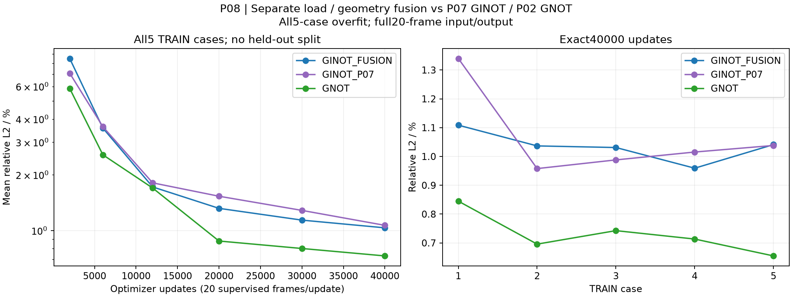
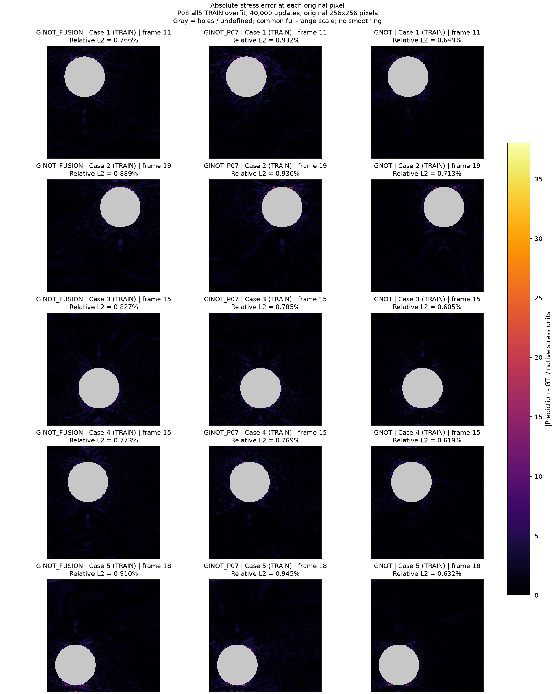
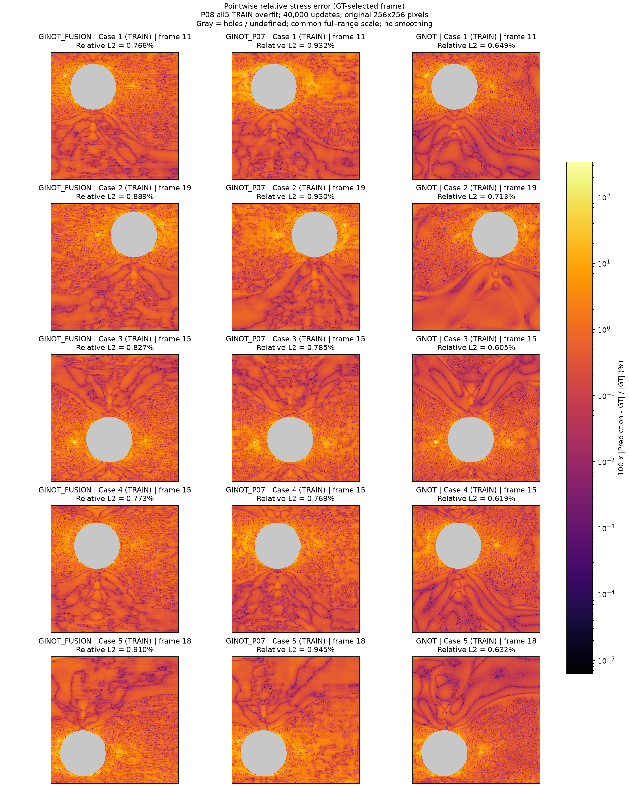
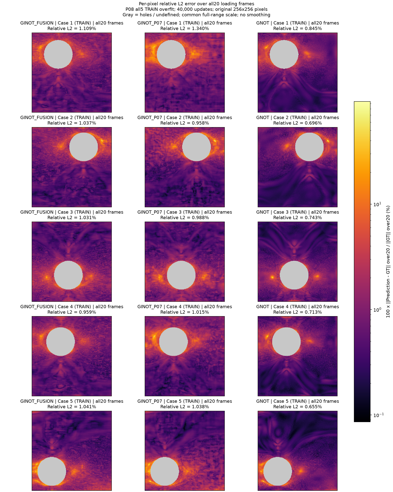
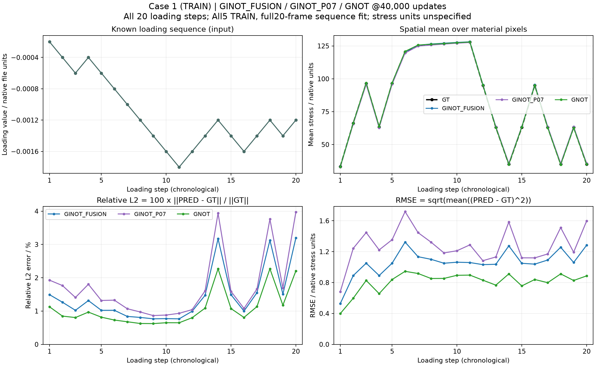
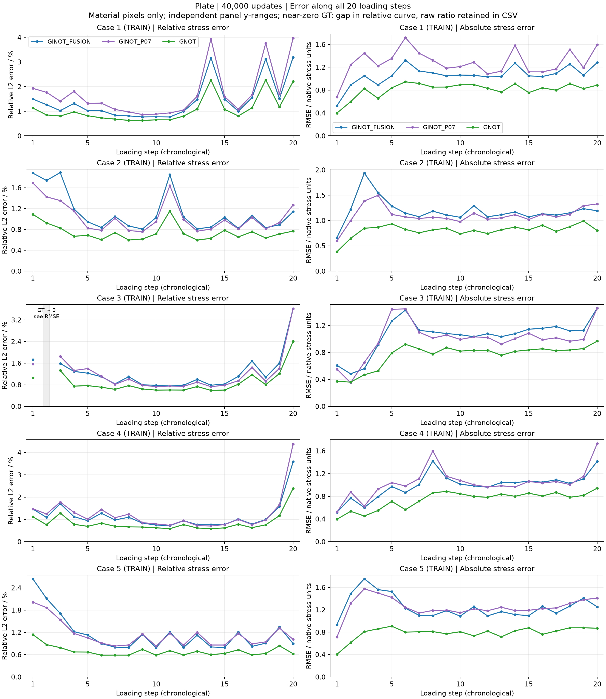

P08 / GINOT LOAD GEOMETRY FUSION
GINOT · 独立载荷编码与几何K/V融合
从纯新初值完成40000步5例全部用于训练，无validation/test，不作泛化结论。每步一个完整case，同时监督全部20帧；每例8000次更新，共40000次optimizer更新。
固定40000步 · 原始材料像素全部20帧
Relative L2 (%)=100×‖PRED−GT‖₂/‖GT‖₂，五例等权平均；点击任意表头排序。
| 模型 | 参数量 | 5例平均 Relative L2 (%) | Case1 (%) | Case2 (%) | Case3 (%) | Case4 (%) | Case5 (%) |
|---|---|---|---|---|---|---|---|
| GINOT_FUSION | 996,029 | 1.0354 | 1.1086 | 1.0367 | 1.0310 | 0.9593 | 1.0412 |
| GINOT_P07 | 995,873 | 1.0679 | 1.3401 | 0.9579 | 0.9881 | 1.0154 | 1.0382 |
| GNOT | 980,964 | 0.7304 | 0.8450 | 0.6959 | 0.7427 | 0.7135 | 0.6550 |

配置与适用范围
同P02：24维输入=XY[-1,1]、Z=0、原geometry、完整20步载荷/0.002；输出20帧应力。应力用全5例材料区域RMS=109.59947归一化，损失为材料像素及20帧normalized MSE。batch1，case按step%5轮换，seed20261111；AdamW3e-4、wd0、clip1、FP32/TF32无AMP；完全沿用P02的after-update学习率计划（6000/12000阈值）。
保留P07的GINOT几何编码器与decoder：width76、4头、geometry cross1/self4、decoder cross4、128 FPS中心、32邻点、radius0.2、dropout0。只对XY做NeRF位置编码形成query；完整20步载荷经20→318→76的MLP单独编码，广播到128个几何token后拼接，经152→318→76的MLP融合为K/V。无GRU、无应力反馈。未改变的153个主干state tensors沿用P07纯未训练初值，新输入层/载荷编码器/融合层随机初始化，不使用训练后权重。参数996,029，比P07的995,873仅多156个；相对GNOT980,964为1.0154倍。输入信息及训练超参数匹配，架构与几何编码不同，FLOPs和耗时未配平。
完整加载历史已知，此为sequence-to-sequence拟合，不是因果预测。GINOT的TRAIN-best只在固定里程碑中选择五例平均训练相对L2最低者，不是验证集选优，不提前停止；选中40000步，平均1.0354%。
时间
GPU空闲准入等待1.09分钟；GINOT训练过程UTC25.42分钟，最终评估与输出1.02秒。训练过程含周期评估和保存，不含初始构造/preflight。GNOT沿用P02已完成结果，不重训。
GT / Prediction / Relative error / Absolute error
加载中…
Prediction
Pointwise relative error (%)
Absolute error
点击原始像素查看数值
每格为原始像素，无平滑/插值；孔洞灰色；GT和预测共用色标。逐点相对误差=100×|PRED−GT|/|GT|，GT=0时未定义；绝对误差=|PRED−GT|，单位沿用原文件。
新融合方式 / P07 GINOT / GNOT误差图
error_absolute.png

error_relative.png

error_relative_all20.png

逐Case加载曲线 · 固定40000步
矢量图
五例合并 · 全部TRAIN
近零GT帧的相对曲线留空，原始比值和绝对RMSE保留CSV。
